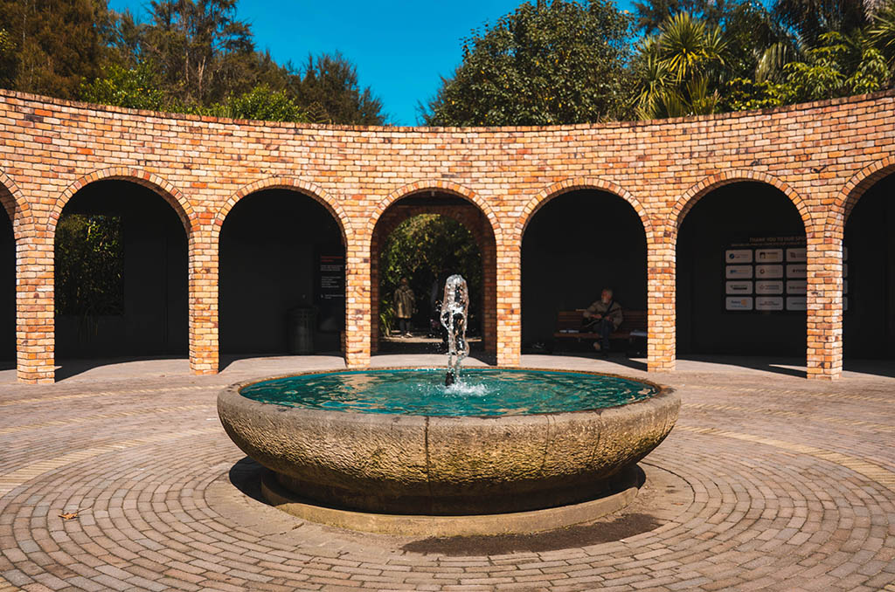
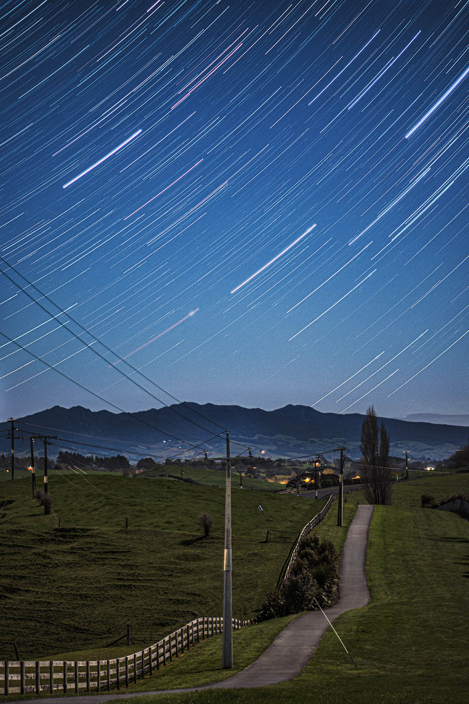

The city of Hamilton is located on the banks of the mighty Waikato River, which is best appreciated from one of the scenic riverside walks or boat cruise. The visually stunning Hamilton Gardens are webbed by paths that journey through a gallery of themed gardens from grand Italy to tranquil Asia. Other city highlights include the Waikato Museum(opens in new window) which provides an insight into the areas rich history and the Hamilton Zoo(opens in new window), which provides native birds with enormous freedom in a walk-through free flight aviary. The Zoo also offers visitors 'Face2Face' encounters with exotic animals.
Hamilton's central precinct is easy to walk and packed with cafes, restaurants, a casino and bars where you can wine, dine and dance the night away. The city is also well known as a destination for national and international events from sporting matches such as rugby, cricket, netball, rowing and boxing to concerts and festivals. Annual events such as the National Agricultural Fieldays and Balloons over Waikato festival draw crowds from far and wide.
 Contact me
Contact me